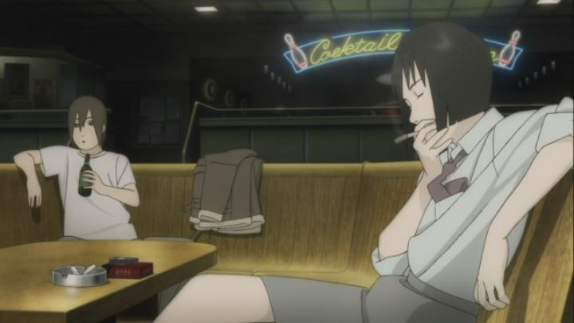

Ah, Mamoru Oshii, you mad rogue. You had a long career in anime, but after international success from "Ghost in the Shell" and "Ghost in the Shell 2," you found the freedom to tackle stories as you liked, often preferring live-action over animation. Oshii's style is a little dense for most viewers, something clear enough by watching "Ghost in the Shell." Because of this, or simply because of ignorance, most viewers never seek out his other anime features: most notably, "Angel's Egg," "Patlabor 1 and 2," and "The Sky Crawlers."Based on the era I first started taking anime seriously, "The Sky Crawlers" (Oshii's last animated film as director) was the first I saw by the artist. At the time, the "Ghost in the Shell" movies were out of print, and the director's name was famous, so I had to see SOMETHING by him, right? When watching the movie, I felt a strong appreciation for it, but didn't necessarily find it entertaining. It was much like reading a good novel, but the kind a high-school English class is forced to read rather than something I would look forward too. Incidently, the movie is, in fact, based on a Japanese novel.Set in an alternate timeline (but vaguely around the period of World War II, or shortly thereafter), the world is at war. At least, it appears to be. Yuichi is a young pilot assigned to a division as a dogfighter, but the camp seems relatively quiet and lax. Yuichi, like most of his comrades, treats this as a job and part of life rather than a fight to the death, even though people to die in battle. Slowly, Yuichi asks more and more questions about the pilot that came before him, and notices odd similarities between pilots, and those who replace them. Ultimately, much of the movie's plot is better told in a Wikipedia synopsis rather than in the movie. The world, in fact, is not at war, but war is staged as a private business to ease tensions between countries and citizens. The pilots tasked with the job of called "Kildren," who are not entirely human. Living and never aging, the movie makes a lot about the mystery behind who the Kildren are, but puts more emphasis on their emotional psyche. Are they ok with the fact that their only reason for living is to die in battle? A meaningless battle where they will eventually be replaced by a copy? Coming from the man who popularized "can machines be alive," this is right up Mamoru Oshii's ally."The Sky Crawlers" can best be described as "smart, but slow." And it is very slow. It retains its patience even when the viewer has long lost it. And it doesn't lead to much of a reveal behind the mysteries of the war, any answers that are given can be predicted well before the story ends. Or rather, are known by reading the first paragraph of the plot synopsis. It's not a good sign when the ending has to be given away at the start to grab a viewer's attention. It is a good story, and has some powerful emotional climaxes to balance out a lot of quiet moments, but can feel like a slog if you aren't in the right mindset. And you likely wouldn't be in the right mindset, if you gave it a watch after seeing the American trailers. It would be very easy to mistake "The Sky Crawlers" as an action movie. Yes, there are fighter planes shooting at each other, but these action scenes make up less than ten minutes of the two-hour runtime, the rest of which is of characters calmly talking and looking at each other. Defintely a case of misleading marketing, and for that reason, I explicitly deny in my categorization that this is an "action" film.The production values of the movie are solid, but haven't aged particularly well in the decade that followed it. The 2D characters are a bit flat, and have unusually bland, if distinct, character designs, with pale round faces that can be off-model and unseemly. The animation is a bit better in the subtlety of movement, but is more impressive during the 3D plane fights, which are well-detailed, well-directed and well-choreographed. Truely, for what little this movie provides in action, it has some of the best dogfights in cinema, even more impressive when the 2D characters are matched in the 3D cockpit, rather than always relying on 3D character replacements like most films would do today. These parts were done by Polygon Pictures, who would become much more prevalient in CG anime a few years later, are for which I give a lot more credit than Production I.G., whose work here is only impressive for its subtle and quiet movements when animated. The soundtrack is by Kenji Kawai, returning from "Ghost in the Shell," and his music is again beautiful, if slightly empty. Much like the themes intend them to be.There is a point to "The Sky Crawlers." The pointlessness of war as a whole, how far we go as a human race to feel content and safe, even at the expense of other lives, as long as those lives aren't human themselves. If you like indie films with big themes, slow pacing and attention to atmosphere, this should be a treat to watch. But even for Oshii, this is a slow burn that asks a lot from its viewer. And it didn't need to be. This was entirely the choice of the director, for better and for worse. As for me? Sure, I like a challenge, even if the action of taking it on is meaningless in the end.
- "Ani" More reviews can be found at : https://2danicritic.github.io/ Previous review: review_The_Secret_World_of_Arrietty Next review: review_The_Spine_of_Night